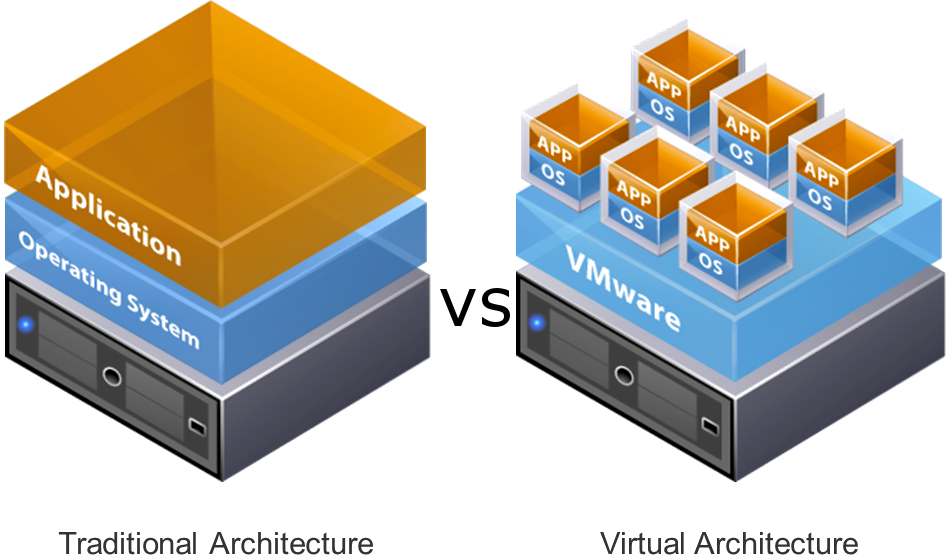
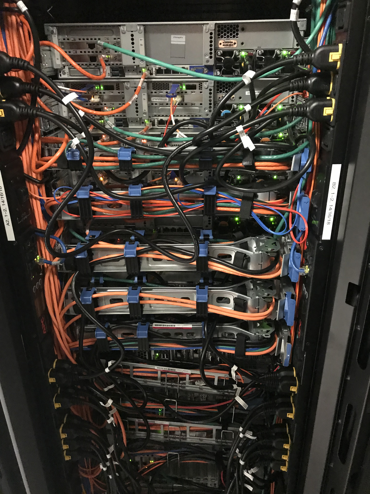
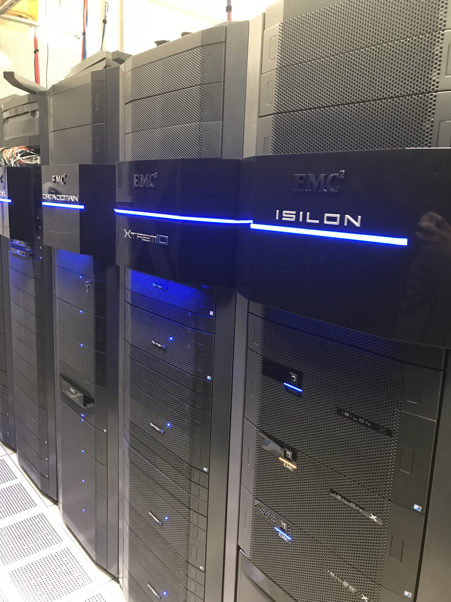
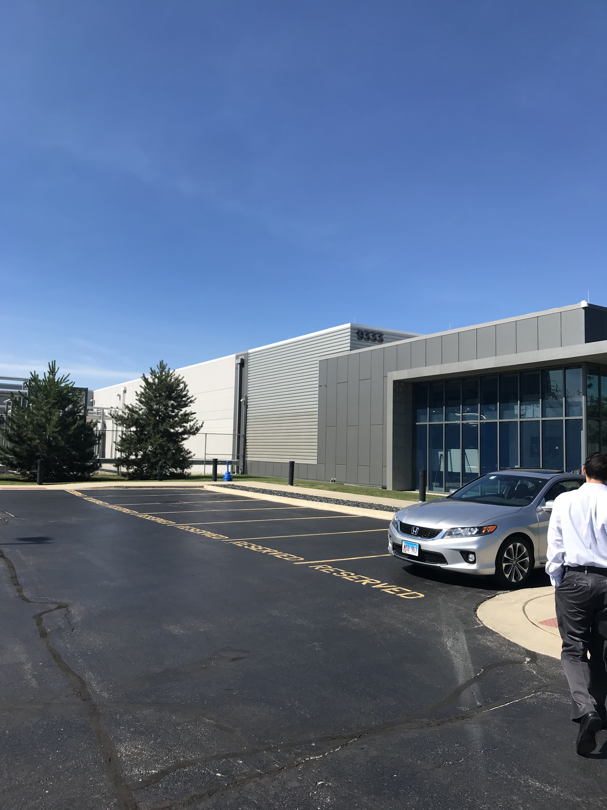
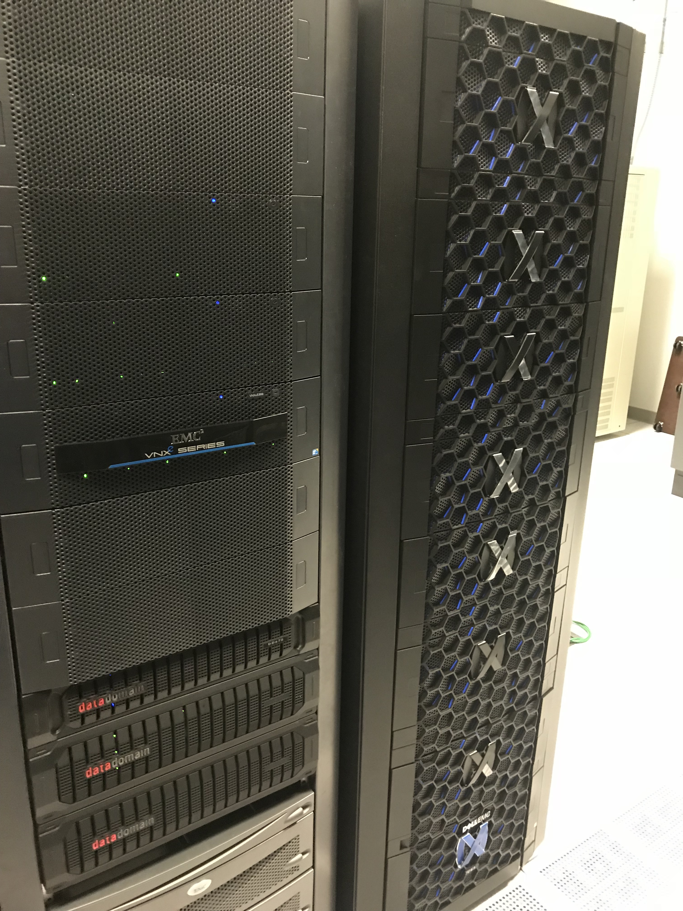

This Summer I was
Building and Supporting Zebra's Infrastructure.
During my time at Zebra Technologies Inc. I accomplished objectives that touched every vertical of the business and achieved global scale. I implemented solutions in production environments that had large business impact. Moreover, I remediated real issues that the organization faced on a global scale across a core business vertical. I was a part of the planning and execution of high availability, business critical systems that support our organization across various verticals. I had the pleasure to work under Skip Woodbury and many other talented infrastructure engineers and leaders. Skip has been with Zebra for over 25 years and has been a part of various verticals in the business, but his passion and interest for technology had led him to become the Windows Infrastructure Lead. Skip was a great mentor to learn from he gave valuable insights about the industry and how to navigate effectively in the an everchanging industry like I.T.
Did you know that 75% of Zebra's infrastructure is virtualized?
What lies ahead
 In the future, I plan to grow in the technology industry by building products with A.I, IOT, Web and Mobile technologies. I will graduate from DePaul University in the June of 2020 and pursue a career in technology. I plan to grow and expand the verticals of my own business, DevEra.co and eventually start new and larger businesses. The internship allowed me to meet talented peers with similar interests in building great products and during the summer we collaborated on projects outside of the internship and I am looking forward to continuing to work with them throughout my career.
In the future, I plan to grow in the technology industry by building products with A.I, IOT, Web and Mobile technologies. I will graduate from DePaul University in the June of 2020 and pursue a career in technology. I plan to grow and expand the verticals of my own business, DevEra.co and eventually start new and larger businesses. The internship allowed me to meet talented peers with similar interests in building great products and during the summer we collaborated on projects outside of the internship and I am looking forward to continuing to work with them throughout my career.
What I worked on

Servers in our Franklin Park Data Center
One of the most notable projects that I worked on was fixing an issue in Active Directory that impacted the entire business on a global scale. The issue was found in the inconsistency of names of Zebra employees, some were uppercase others were lower case and some were title case. To fix this issue, I used PowerShell to write a script that would standardize all 11,668 names of employees in Zebra to title case. With the help and guidance of Skip Woodbury, I tested the script and deployed it in production. I resolved the issue, which distributed to every instance of Microsoft Office 365.

40 PB Solid State Data Servers
The main project I have been working on throughout the internship is a DHCP overhaul initiative. I have been a part of the planning and execution of creating a failover system that will ensure high availability DHCP across the organization. The project stemmed from a disaster that happened last year in Mexico where Zebra’s DHCP servers were down and could not provide leases. The result of this caused applications and internet connections to fail. Zebra’s infrastructure team proactively addressed this issue and I contributed to the planning and implementation of redundant systems to create reliability throughout all systems. I installed DHCP features and tools on more than 50 servers. We are currently in the process of testing and implementing the fail overs. With the added redundancy, our systems will become even more reliable and our relationship with customers will continue to grow.

Siebel
I was one of the main contacts for user creation and verification in the Siebel test AD environment. I created and verified over 20 users in the test environment.

Secret Server
I administered an application that stores highly confidential passwords and vendor related credentials. I managed user creation, groups assignment, role assignment, provided privileged access, organized folder structure across the Windows, Linux, Cloud and Network teams.
Fire Power
A rising issue in every industry is cybersecurity and Zebra acknowledges every aspect of that issue holistically. I reinforced the security of servers by installing and configuring next level security agents by Cisco. I secured more than 40 business critical servers in Zebra’s production environment.
Printers
A crucial vertical of Zebra’s business is our printers. After seeing the showcase given about our products and how they work in each industry I then worked on building the infrastructure to support our printers in various locations across the nation. I created and configured more than 500 printers across production and test environments for locations around the nation.
How Can I Improve?
Feedback was an integral part of this internship, without it I would not be able to learn and grow from this experience. Please fill out the survey and leave your thoughts, comments and feedback below.
{kind=link}
{kind=link}
{kind=link}
{kind=link}
{kind=link}
{kind=link}